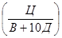
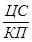
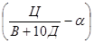
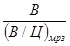
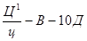
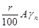
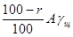
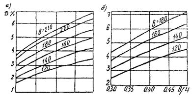
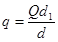

АКЦИОНЕРНОЕ ОБЩЕСТВО КОРПОРАЦИЯ «ТРАНССТРОЙ»
УКАЗАНИЯ
ПО ПОВЫШЕНИЮ МОРОЗОСТОЙКОСТИ
БЕТОНА ТРАНСПОРТНЫХ СООРУЖЕНИЙ
ВСН 150-93
МОСКВА 1993
Разработаны ордена Октябрьской революции научно-исследовательским институтом (НИИТСом) - канд. техн. наук В.С. Гладков.
Внесены ордена Октябрьской революции научно-исследовательским институтом транспортного строительства (НИИТСом).
Подготовлены к утверждению научно-техническим центром Акционерного общества Корпорация «Трансстрой».
Согласованы фирмами «Морречстрой». «Трансстройиндустрия» и «Мостострой».
С введением в действие Указаний по повышению морозостойкости бетона транспортных сооружений ВСН 150-93 теряют силу «Технические указания по повышению морозостойкости бетона транспортных сооружений» (ВСН 150-68 Минтрансстроя СССР).
|
Акционерное общество Корпорация «Трансстрой» |
Ведомственные строительные нормы |
ВСН 150-92 |
|
Указания по повышению морозостойкости бетона транспортных сооружений |
Взамен |
1.1. Указания предназначены для применения в производстве бетонных работ как при возведении транспортных сооружений, так и при изготовлении сборных бетонных и железобетонных конструкций транспортного назначения с использованием тяжелого бетона.
Указания могут быть применены при возведении сооружений и изготовлении сборных конструкций другого назначения.
1.2. Применение Указаний обязательно во всех случаях, когда к бетону транспортных сооружений и конструкций предъявляются требования по морозостойкости 100 и выше.
1.3. Все вновь составляемые ведомственные технические нормативные документы должны учитывать требования настоящих Указаний.
1.4. Указания с целью надежного обеспечения требуемой морозостойкости предусматривают обязательное выполнение комплекса технических мероприятий, разработанного с учетом условий эксплуатации бетона и включающего:
1) выбор материалов для бетона:
2) назначение состава бетона с ограничением В/Ц и введением в него химических добавок для регулирования поровой структуры;
3) качественное приготовление бетонной смеси и эффективный способ ее укладки;
4) благоприятный и достаточно длительный режим твердения бетона.
Отклонения от требования Указаний в сторону их смягчения могут быть допущены только на основании специальных исследований и с разрешения организации, утвердившей настоящие Указания.
|
Внесены Всесоюзным научно-исследовательским институтом транспортного строительства (ЦНИИС) |
Утверждены Акционерным обществом Корпорация
«Трансстрой» |
Срок введения в действие |
1.5. Более высокие и жесткие требования к технологии бетона, содержащиеся в действующих нормативных документах по производству бетонных работ и изготовлению сборных бетонных и железобетонных конструкций для отдельных видов транспортных сооружений, настоящими Указаниями не отменяются, а должны строго выполняться.
1.6. Указания не распространяются на производство бетонных работ при строительстве бетонных покрытий и оснований аэродромов и автомобильных дорог и при изготовлении железобетонных плит сборных покрытий аэродромов и автомобильных дорог. Требования к технологии бетона для указанных сооружений и конструкций приведены в ГОСТ 26633-85, СНиП 3.06.03-85, СНиП 3.06.06-85, BCH 139-80 Минтрансстрой, ГОСТ 25912.0-91, ТУ 35-1215-83, ТУ 35-871-83.
для бетонов марки F 100 - портландцемент и его разновидности по ГОСТ 10178-85, для бетонов марок F200 к F 300 - портландцемент и его разновидности по ГОСТ 10178-85, в клинкере которых содержание трехкальциевого алюмината (С3А) не превышает 10%, а для бетона мостов и труб, стоек опор контактной сети и автоблокировки - не превышает 8%; для бетонов марок F 400 и F500 - портландцемент и его разновидности по ГОСТ 10178-85, в клинкере которых содержание С3А не превышает 8%.
Содержание активных минеральных добавок в цементе, используемом для бетона марки F400 и выше, не должно превышать 5% по массе.
При действии на морозостойкий бетон агрессивной воды - среды выбор цемента необходимо осуществлять в соответствии с требованиями главы СНиП 2.03.11-85.
При предъявлении к бетону или бетонной смеси для отдельных видов конструкций специальных требований (например, нерасслаиваемости при центрифугировании) выбор цемента должен производиться с учетом требований соответствующих нормативных документов на изготовление этих конструкций.
2.3. В морозостойких бетонах рекомендуется применять пластифицированные или гидрофобные портландцементы, удовлетворяющие требованиям, пп. 2.1, 2.2 настоящих Указаний.
2.4. Заполнители бетонов должны соответствовать требованиям ГОСТ 10268-80.
2.5. Для повышения морозостойкости и водонепроницаемости бетона, улучшения технологических свойств бетонной смеси и экономного расходования цемента следует вводить в бетонную смесь химические добавки пластифицирующего, пластифицирующе-воздухововлекающего, воздухововлекающего или газообразующего действия. Перечень рекомендованных добавок приведен в таблице 1.
Таблица 1
|
Наименование добавок |
Обозначение |
Стандарты и технические условия на добавки |
|
|
Пластифицирующие: |
|||
|
суперпластификаторы |
Разжижитель С-З |
С-З |
ТУ 6-14-625-80** |
|
сильнопластифицирующие |
Лигносульфонат технический модифицированный |
ЛСТМ-2 |
ОСТ 13-287-85 |
|
среднепластифицирующие |
Лигносульфонат технический |
ЛСТ |
ОСТ 13-183-83 |
|
Пластифицирующе-воздухововлекающие |
Щелочной сток производства капролактама |
ЩСПК |
ТУ 113-03-488-84 |
|
Этиленликонат натрия |
ГКЖ-10 |
ТУ 6-02-696-76 |
|
|
Метилсиликонат натрия |
ГКЖ-11 |
ТУ 6-02-696-76 |
|
|
Воздухововлекающие |
Смола нейтрализованная воздухововлекающая |
СНВ |
ТУ 81-05-75-74* |
|
Смола древесная, омыленная |
СДО |
ТУ 13-05-02-83 |
|
|
Клей талловый пековый |
КТП |
ОСТ 13-145-82 ОСТ 31-12-77 |
|
|
Синтетическая поверхностно-активная добавка |
СПД |
ТУ 38-101253-77 |
|
|
Газообразующие |
Полигидросилоксан 136-11 (кремнийорганическая жидкость ГКЖ-94) |
ГКЖ-94 |
ГОСТ 10834-76* |
2.6 Вода для затворения бетонной смеси и приготовления растворов химических добавок должна соответствовать ГОСТ 23732-79.
3.1. Проектирование и подбор составов бетона марок F100 ¸ F300 осуществляют в соответствии с пп. 3.2-3.17 настоящих Указаний и приложением 1.
Проектирование и подбор составов марок F400 н F500 для сборных конструкций, насыщаемых пресной водой, производят в соответствии с приложением 2.
Рекомендации по подбору состава бетона особовысокой морозостойкости для морских сооружений и по технологии изготовления тонкостенных железобетонных конструкций из этого бетона приведены в приложении 3.
3.2. При проектировании состава морозостойких бетонов следует учитывать ограничения максимального водоцементного отношения и назначение необходимого объема вовлеченного воздуха в бетонной смеси, устанавливаемых в зависимости от проектной марки морозостойкости бетона, условий эксплуатации конструкции (состав воды-среды) и условий твердения бетона в соответствии с пп. 3.3-3.6.
3.3. Максимально допустимые значения водоцементного отношения для бетонов марок F100¸F300 принимаются по таблице 2 (для бетонов, оттаивающих в пресной или слабоминерализованной воде при общем содержании солей 5 и менее г/л) и по таблице 3 (для бетонов, оттаивающих в морской или минерализованной воде при общем содержании соли более 5 г/л) при содержании в бетонной смеси вовлеченного воздуха в соответствии с пп. 3.4-3.7.
Таблица 2
|
Максимально допустимые В/Ц для бетона, оттаивающих в пресной или слабоминерализованной воде |
||
|
твердевших в естественных условиях |
подвергшихся тепловой обработке |
|
|
F100 |
0,60 |
0,55 |
|
F150 |
0,57 |
0,52 |
|
F200 |
0,55 |
0,50 |
|
F300 |
0,47 |
0,45 |
Примечания 1. Применение воздухововлекающих и пластифицирующе-воздухововлекающих добавок обязательно в бетонах марок F200 и F300.
2. В бетонах марок F100 и F150, приготовленных без добавок, повышающих морозостойкость, значение В/Ц должно быть уменьшено на 0,05.
Таблица 3
|
Максимально допустимые В/Ц для бетонов, оттаивающих в минерализованной и в морской воде с общим содержанием солей более 5 г/л |
||
|
твердевших в естественных условиях |
подвергшихся тепловой обработке |
|
|
F100 |
0,55 |
0,50 |
|
F150 |
0,52 |
0,47 |
|
F200 |
0,50 |
0,45 |
|
F300 |
0,43 |
0,40 |
Примечание. Применение воздухововлекающих и пластифицирующе-воздухововлекающих добавок в бетонах марок F100¸F300 обязательно.
3.4. Воздухосодержание уплотненной бетонной смеси для морозостойких бетонов марок F100¸F300, насыщаемых в условиях эксплуатации пресной или слабоминерализованной водой, должно составлять в среднем 3-5% по объему, но быть не меньше 2%.
Воздухосодержание уплотненной бетонной смеси для морозостойких бетонов марок F100¸F300, насыщаемых в период эксплуатации морской или минерализованной водой при общем содержании солей более 5 г/л, должно соответствовать таблице 4.
Таблица 4
|
Воздухосодержание в % по объему при В/Ц |
|||
|
менее 0,40 |
0,41-0,50 |
более 0,50 |
|
|
10 |
2-4 |
3-5 |
5-7 |
|
20 |
2-3 |
2-4 |
4-6 |
|
40 |
2-3 |
2-3 |
3-5 |
|
70 |
2-3 |
2-3 |
2-4 |
3.6. Указанное в п. 3.4, 3.5 воздухосодержание бетонных смесей должно достигаться при обязательном введении в них воздухововлекающих или пластифицирующе-воздухововлекающих добавок, соответствующих табл. 1, или комплексных на их основе с целью распределения нормируемого объема вовлеченного воздуха в виде замкнутых пузырьков мельчайших размеров.
3.8. Рекомендованные дозировки добавок, в том числе комплексных, приведены в таблице 5.
Таблица 5
|
Количество добавок в расчете на сухое вещество, %, массы цемента |
|
|
ЛСТ+(СКВ, СДО, КТП, СПД) |
(0,1¸0,2) +(0,003¸0,05) |
|
ЛСТ+ГКЖ-94 |
(0,1¸0,2) + 0,15 кг |
|
С-3+ (СНВ, СДО, КТП, СПД) |
(0,3¸0,7) + (0,002¸0,05) |
|
лстм-2+(Снв, сдо, ктн) |
(0,1¸0,3)+(0,003¸0,03) |
|
с-з+лст |
0,45 + (0,07¸0,2) |
|
с-з+щспк |
(0,3¸0,7)+(0,15¸0,30) |
|
щспк |
0,15¸0,35 |
|
гкж-10 |
0,05¸0,2 |
|
гкж-11 |
0,05¸0,2 |
Примечания. 1. Из компонентов, указанных в скобках, применяется только один.
2. Кремнийорганическая жидкость ГКЖ-94 вводится в бетонную смесь только в виде 50%-ной водной эмульсин в количестве 0,3 кг на 1 м3 смеси.
3.9. При применении пластифицированного портландцемента в бетонную смесь следует вводить одну из воздухововлекающих добавок, соответствующих табл. 1. При применении гидрофобного портландцемента в бетонную смесь следует вводить добавку ЛСТ. Применение добавки С-3 в бетонах на пластифицированном или гидрофобном цементе не допускается.
Применение добавки ЛСТМ-2 в бетонах на пластифицированном или гидрофобном цементе допускается только после экспериментального исследования.
3.10. Дозировки добавок, в том числе и компонентов комплексных добавок, уточняются при подборе состава бетонной смеси на конкретных материалах с обеспечением минимальной водопотребности бетонной смеси, необходимого воздухосодержания у места ее укладки, достижения заданной прочности бетона и отсутствия повреждения структуры бетона при принятом в производстве режиме тепловлажностной обработки.
3.11. Воздухосодержание бетонной смеси следует регулировать при подборе состава изменением дозировки воздухововлекающей или пластифицирующе-воздухововлекающей добавки в пределах, указанных в таблице 5.
При этом должны быть учтены возможные потери вовлеченного воздуха бетонной смесью в зависимости от условий и длительности ее транспортирования, от интенсивности виброуплотнения. Должно быть также учтено, что:
а) воздухосодержание бетонной смеси увеличивается с возрастанием дозировки добавки, с ростом подвижности бетонной смеси, с увеличением доли песка в смеси заполнителей, при более эффективном перемешивании бетонной смеси;
б) воздухосодержание понижается с увеличением расхода цемента и с повышением температуры бетонной смеси.
Окончательно дозировка воздухововлекающей или пластифицирующе-воздухововлекающей добавки, в том числе в составе комплексной добавки, должна быть уточнена в пробном замесе, приготовленном в производственном смесителе.
3.12. Добавки ГКЖ-10 и ГКЖ-11 рекомендуется применять в бетонах марок не выше F200, оттаивающих в пресной воде. Добавку ЩСПК рекомендуется применять в бетонах марок не выше F300, оттаивающих в пресной воде.
3.13. При выборе вида добавок следует исходить из целесообразности применения на одном бетонном заводе только одного вида добавки (или одной комплексной добавки) с учетом возможности ее использования для всей продукции, к бетону которой предъявляется требование морозостойкости.
3.14. Назначаемая подвижность бетонной смеси должна соответствовать принятому в производстве способу ее уплотнения. При этом должна быть учтена повышенная удобоукладываемость бетонных смесей с вовлеченным воздухом в количестве более 2% по объему, позволяющая снижать осадку конуса по сравнению со смесью без добавок или содержащей вовлеченный воздух до 2% в соответствии с таблицей 6.
3.15. С целью предупреждения водоотделения в бетонных смесях и снижения морозостойкости бетона рекомендуется ограничивать подвижность смесей осадкой конуса не более 6 см для бетонов марки F300 и для бетонов зоны переменного уровня морских гидротехнических сооружений.
Таблица 6
|
Подвижность бетонной смеси, см, при содержании вовлеченного воздуха в % по объему |
||
|
2-4 |
4-6 |
|
|
2-4 |
1-3 |
1-2 |
|
4-6 |
3-4 |
2-4 |
|
6-8 |
4-6 |
3-5 |
|
8-10 |
6-8 |
4-6 |
|
10-12 |
8-10 |
5-7 |
|
12-14 |
10-12 |
6-8 |
При соответствующем обосновании подвижность бетонной смеси для морозостойких бетонов может быть более 6 см по осадке конуса.
Допускается применение высокоподвижных и литых бетонных смесей с комплексными добавками по таблице 5.
1) введения в них комплексных добавок, содержащих наиболее эффективные пластификаторы;
2) использования пластифицирующего действия вовлеченного воздуха, каждый процент которого в объеме бетона позволяет снизить расход воды на 3-4 л.
Rб = f 
где Ц - расход цемента, кг/м3, В - расход воды, л/м3, Д - объем вовлеченного воздуха в уплотненной бетонной смеси, %.
Указанная зависимость может быть получена путем предварительного испытания бетонов на выбранных для применения цементах и заполнителях, в том числе приготовленных без воздухововлекающих добавок.
3.18. Подбор состава морозостойкого бетона с химическими добавками следует производить путем установления оптимального соотношения между компонентами бетонной смеси, обеспечивающего выполнение требований, предъявляемых к бетонной смеси (подвижность, воздухосодержание) и к бетону (морозостойкость, пpочнocть, водонепроницаемость) и требований пп. 3.1-3.17 настоящих Указаний.
Примеры подборов составов бетона с разными химическими добавками приведены в приложении 1.
4.1. Приготовление, транспортирование, укладку и формование бетонных смесей следует производить в соответствии с указаниями главы СНиП 3.03.01-87 и пп. 4.2-4.12 настоящих Указаний.
4.3. Приготовление бетонных смесей следует производить в бетоносмесителях периодического действия.
Жесткие и малоподвижные смеси с осадкой конуса 2 см и менее следует приготавливать в бетоносмесителях принудительного действия.
Бетонные смеси с добавкой ГКЖ-94 при любой подвижности следует приготавливать в бетоносмесителях принудительного действия.
4.4. Химические добавки следует вводить в бетонную смесь в виде водного раствора определенной концентрации. Водный раствор добавок следует подавать в бетономешалку, как правило, вместе с водой затворения.
4.5. Предварительное приготовление водных растворов химических добавок следует производить в соответствии с приложением 4.
4.6. Дозирование химических добавок разрешается производить по массе или объему. Используемые для этой цели дозаторы должны обеспечивать точность дозирования в соответствии с ГОСТ 7473-85.
4.7. При применении комплексных добавок следует, как правило, применять раздельные установки для приготовления растворов добавок и отдельные дозаторы.
Допускается заблаговременное приготовление совмещенных в одном водном растворе комплексных добавок СПД+ЛСТ, ГКЖ-94+ЛСТ, ЩСПК+С-3, если в бетонах, приготавливаемых на одном БСУ, применяются комплексные добавки при постоянном количественном соотношении ее компонентов.
При заблаговременном приготовлении совмещенной добавки СНБ+ЛСТ требуется стабилизация приготавливаемого совмещенного раствора с помощью альгината натрия. Приготовление такого раствора осуществляют в соответствии с приложением 4. Дозирование комплексной добавки в виде совмещенного раствора следует производить через один дозатор.
4.8. Объемную дозу водного раствора добавки на один замес А следует определять по формуле:
A = 
где Ц - расход цемента на замес, кг; С - дозировка добавки, % массы цемента, установленная при подборе состава бетона; К - концентрация рабочего раствора добавки, %; П - плотность рабочего раствора добавки, г/см3.
4.9. Уплотнение бетонных смесей следует производить вибрированием. Применение вакуумирования для уплотнения бетонных смесей с воздухововлекающими добавками запрещается. Разрешается уплотнять бетонные смеси с воздухововлекающими добавками центрифугированием.
4.10. Длительность и интенсивность виброуплотнения бетонных смесей с воздухововлекающими добавками должны обеспечить сохранение в бетоне количества вовлеченного воздуха не менее значений, установленных в пп. 3.4-3.5.
4.11. Рекомендуется бетонировать изделия и конструкции так, чтобы поверхности, подвергающиеся в условиях эксплуатации влиянию внешних воздействий, были обращены при формировании к бортовой опалубке или днищу.
4.12. Замерзание приготовленной бетонной смеси и свежеуложенного бетона не допускается.
При приготовлении в зимнее время теплой бетонной смеси температура ее в случае применения добавки ГКЖ-94 не должна превышать 30°С.
5.1. Твердение бетона должно происходить в условиях и в течение сроков, достаточных для формирования долговечной структуры, с соблюдением требований пп. 5.2-5.10 настоящих Указаний.
5.3. Разрешается ускорять процесс твердения бетона путем тепловлажностной обработки в пропарочных камерах или другими способами, создающими условия, установленные пп. 5.4-5.9 настоящих Указаний.
Запрещается применение электропрогрева для бетона с добавкой ГКЖ-94.
Предварительная выдержка бетонов с добавкой ГКЖ-94 должна составлять не менее 4 часов при температуре окружающей среды выше +20°С и не менее 6 часов при температуре окружающей среды ниже +20°С.
5.5. Режим тепловлажностной обработки конструкций и изделий из морозостойких бетонов следует назначать с учетом следующих ограничений:
скорость подъема температуры среды - не более 20 град/ч, а при марке бетона F200 н выше и во всех случаях применения бетонов с добавкой ГКЖ-94 -не более 10 град/ч, температура среды в период изотермического прогрева не должна превышать 80°С, а при марке бетона F200 и выше - 70°С;
скорость снижения температуры среды - не более 20 град/ч, а для бетонов марки F200 и выше - не более 10 град/ч.
Температура среды в период изотермического прогрева массивных конструкций с минимальным размером сечения более 500 мм не должна превышать 70°С.
5.6. Возможно применение ступенчатого режима тепловлажностной обработки с выдерживанием изделий и конструкций при температуре +50°С в течение 1,5-2 ч.
Подъем температуры среды при этом следует осуществлять со скоростью до 10-15 град/ч.
5.8. Относительная влажность среды при тепловой обработке бетона должна составлять 90-100%.
5.9. Предварительная выдержка, скорость подъема и снижения температуры, уровень изотермической температуры при тепловлажностной обработке бетонных и железобетонных конструкций мостов и труб должны соответствовать требованиям главы СНиП 3.06.04-91.
Прочность морозостойких бетонов без воздухововлекающих добавок должна к моменту замерзания достичь не менее 100% от проектной.
Прочность бетона бетонных и железобетонных конструкций мостов и труб ко времени выдачи их на склад, в том числе в зимнее время, должна соответствовать требованиям главы СНиП 3.06.04-91.
5.11. Сборные бетонные и железобетонные конструкции для морских гидротехнических сооружений должны быть после тепловой обработки выдержаны при положительной температуре в течение сроков, установленных главой СНиП 3.07.02-87.
Срок выдержки указанных конструкций может быть сокращен при подтверждении проектной марки морозостойкости и необходимой прочности испытанием образцов производственного бетона, при регулярном контроле воздухосодержания бетонной смеси и по согласованию с проектной организацией.
Отпускная прочность бетона несущих железобетонных и бетонных конструкций, включая массивы для морских сооружений в тяжелых и средних условиях эксплуатации, устанавливаемых по СНиП 3.07.02-87, должна быть не менее 100% проектной.
6.1. Подбор составов бетонов требуемой морозостойкости должен производиться заблаговременно на материалах, которые намечено использовать при возведении сооружения или при изготовлении конструкций и которые отвечают требованиям настоящих Указаний и соответствующих нормативных документов.
Проверка морозостойкости бетона должна быть произведена путем испытания по ГОСТ 10060-87 образцов бетона, изготовленных в соответствии с подобранным составом и твердевших в условиях, выбранных в соответствии с данными Указаниями и условиями производства,
6.2. Повторные испытания производственного бетона на морозостойкость следует производить не реже одного раза в 6 месяцев, а также при изменении состава бетона, замене материалов или изменении условий и сокращении сроков твердения.
6.3. Цементы и заполнители, применяемые для приготовления бетонной смеси, должны иметь полные паспортные данные. По запросу завода-изготовителя цемента должен быть установлен минералогический состав используемого клинкера и его соответствие требованиям настоящих Указаний.
6.4. По истечении гарантийного срока хранения применяемых химических добавок необходимо проверить их соответствие требованиям действующих на них технических условий или стандартов.
6.5. Соответствие морозостойкости бетона сооружений или конструкций проектной достигается тщательным соблюдением требований по качеству используемых в бетоне материалов, по составу бетона и точности дозирования составляющих, по подвижности и воздухосодержанию бетонной смеси, по режиму твердения.
6.6. Выданный лабораторией на БСУ рабочий состав бетона должен регулярно корректироваться с учетом влажности заполнителей и содержания воды в рабочем растворе применяемых химических добавок.
6.7. Контроль подвижности и воздухосодержания бетонной смеси следует осуществлять на месте ее укладки не реже одного раза в смену в условиях стабильного производства (при неизменных рабочем составе бетона, качестве материалов, режиме приготовления и уплотнения бетонной смеси) и 2 раза в смену в других условиях.
Контроль подвижности бетонной смеси следует производить по ГОСТ 10181.1-81, а воздухосодержания бетонной смеси - по ГОСТ 10181.3-81.
6.8. Температурно-влажностный режим твердения бетона сооружения или сборных конструкций должен контролироваться с момента укладки (формования) бетонной смеси и до приобретения бетоном проектной морозостойкости,
6.9. Контроль за качеством рабочих растворов химических добавок должен состоять в проверке их плотности.
Не допускается расходование рабочих растворов добавок, концентрация которых отличается от заданной, без соответствующей корректировки.
При проверке плотности раствора необходимо учитывать ее изменение в зависимости от температуры раствора.
7.1. При производстве работ необходимо строго соблюдать правила техники безопасности согласно требованиям главы СНиП III-4-80 «Техника безопасности в строительстве» и пп. 7.2-7.12 настоящих Указаний.
7.3. Добавка СПД относится к слабогорючим веществам. Для ее тушения следует применять химическую или воздушно-механическую пену, распыленную воду. При небольших очагах возгорания можно применять пенные огнетушители ОП-3 или ОП-5.
7.4. Остальные добавки, применяемые в соответствии с Указаниями, в пожарном отношении не опасны.
Однако в месте хранения концентрированного раствора ЩСПК и работы с ним следует запретить курение и применение открытого огня.
7.5. Запрещается принимать пищу в помещениях, где хранят добавки или приготовляют их водные растворы.
7.6. В помещениях приготовления водных растворов добавок следует осуществить приточно-вытяжную вентиляцию.
7.7. Рабочие перед допуском к работе с добавками должны пройти соответствующий инструктаж по технике безопасности.
7.8. К работе с добавками могут быть допущены рабочие, обученные методам работы с добавками.
К работе с добавками ЩСПК и СПД не следует допускать лиц моложе 18 лет.
Не следует допускать к работе с этими добавками и добавкой С-3 лиц с повреждением кожного покрова в виде ссадин, царапин и т.п., с поражением (воспалением) век и глаз.
7.9. Рабочие на приготовлении водных растворов добавок должны быть в спецодежде из водоотталкивающей ткани, защитных очках, резиновых сапогах и перчатках.
7.10. Добавка ЩСПК относится к умеренно токсичным веществам. При попадании добавки на кожу ее необходимо промыть теплой водой, а при попадании в глаза - слабым раствором борной кислоты. Предельно допустимая концентрация в помещениях не должна превышать: циклогексана - 80, циклогенсанона - 10 и циклогенсанола - 10 мг/м3.
7.11. Добавка СПД относится к 3-му классу умеренно опасных веществ. Предельно допустимая концентрация паров (по высшим жирным спиртам С6-С10) в воздухе рабочей зоны - 10 мг/м3. Работающие с добавкой СПД должны обеспечиваться фильтрующим противогазом марки А. При проливе СПД обезвреживание следует производить засыпкой песком с выносом его из помещения в специально отведенное место.
1.1. Бетоны с комплексной добавкой типа CHB+ЛCT
1.1.1. К добавкам типа СНВ+ЛСТ относятся добавки СПД+ЛСТ, СДО+ЛСТ, КТП+ЛСТ.
Оптимальная дозировка выбирается путем испытания бетонных смесей и бетонов с В/Ц, выбранным в соответствии с п. 3.3 Указаний при 3-4 значениях дозировки ЛСТ. Бетонные смеси при этом должны иметь заданную подвижность, а прочность образцов бетона контролируется в заданные сроки (например, в возрасте 7 и 28 суток или сразу после ТВО).
Для всех приготовленных смесей определяют содержание вовлеченного воздуха. По контролируемой объемной массе бетонной смеси расчетным путем определяют расход воды.
Оптимальная дозировка ЛСТ соответствует минимальному расходу воды и достижению наибольшей прочности при одинаковом расходе цемента.
1.1.3. При расчете состава бетона с комплексной добавкой СНВ+ЛСТ определяют по табл. 1 ориентировочную водопотребность бетонных смесей с учетом примечаний к таблице.
Таблица 1
|
Наибольший размер крупного заполнителя, мм |
Расход воды на 1 м3 при осадке конуса 5 см, в л |
|
|
бетон на гравии |
бетон на щебне |
|
|
10 |
190 |
200 |
|
20 |
165 |
175 |
|
40 |
145 |
160 |
|
70 |
140 |
150 |
Примечания. 1. Расход воды установлен для бетонных смесей с добавкой 0,15% ЛСТ при воздухосодержании уплотненной смеси 2% и с осадкой конуса 5 см.
2. При осадке конуса больше или меньше принятой расход воды соответственно увеличивают или уменьшают на 3 л на каждый сантиметр осадки конуса.
3. При назначении содержания вовлеченного воздуха более 2% расход воды уменьшают на 3 л на каждый дополнительный процент воздуха.
Rб = АRц 
где Rц - активность цемента, кгс/см2; Ц и В - расход цемента и воды, кг/м3; Д - воздухосодержание бетонной смеси, % по объему; А и a - коэффициенты, зависящие от качества заполнителей, определяют расход цемента
При построении зависимости (1), подученной на бетонах без воздухововлекающей добавки, принимается Д = 0.
При отсутствии заранее полученных данных о прочности бетона в зависимости от его состава принимаются следующие ориентировочные значения коэффициентов: А=0,55, a=0,5.
1.1.5. Сверяют ожидаемое водоцементное отношение, полученное при использовании данных, полученных в пп. 1.1.3 и 1.1.4 настоящего приложения, с максимальным значением, установленным п. 3.3 Указаний.
Если ожидаемое В/Ц больше значения, установленного Указаниями, то расход цемента изменяют в соответствии с формулой:
Ц1 = 
где Ц1 - расход цемента, откорректированный с учетом требования морозостойкости бетона, В - водопотребность бетонной смеси, установленная по п. 1.1.3 настоящего приложения, (В/Ц)мрз - максимально допустимое водоцементное отношение, соответствующее п. 3.3 Указаний.
А = 1000- 
где А - абсолютный объем заполнителей, л/м3; Ц1, В - расход цемента и воды, кг/л; gц - удельная масса цемента; Д - воздухосодержание уплотненной бетонной смеси, %
1.1.7. По табл. 2 определяют ориентировочную долю песка от общего количества заполнителей (по объему).
Таблица 2
|
Объемная доля песка в смеси наполнителей, % |
||||||||
|
в бетоне на гравии при воздухосодержании, % |
в бетоне на щебне при воздухосодержании, % |
|||||||
|
1 |
4 |
6 |
8 |
2 |
4 |
6 |
8 |
|
|
10 |
53 |
52 |
51 |
52 |
56 |
53 |
51 |
53 |
|
20 |
42 |
41 |
39 |
40 |
46 |
43 |
41 |
42 |
|
40 |
35 |
33 |
32 |
33 |
33 |
36 |
35 |
36 |
|
70 |
31 |
30 |
29 |
30 |
34 |
32 |
31 |
32 |
Примечания. 1. Процент песка установлен для бетонных смесей на природном песке с модулем крупности 2,5 при В/Ц=0,55.
2. При увеличении или уменьшении модуля крупности песка на 0,1 содержание песка соответственно увеличивается или уменьшается на 0,5%.
3. При увеличения или уменьшении В/Ц на 0,05 содержание песка соответственно увеличивается или уменьшается на 1%.
1.1.8. Определяют количество песка и щебня (гравия) в бетонной смеси:
П = 
Щ = 
где П и Щ - расход песка и щебня (гравия) на 1 м3 бетонной смеси, кг; r - процент песка в смеси заполнителей по п. 1.1.7 приложения; А - абсолютный объем заполнителей по п. 1.1.6, л; gп, gщ - удельные массы соответственно песка и щебня (гравия), кг/л.
1.1.9. Путем пробных замесов в лабораторном смесителе при оптимальной дозе ЛСТ и при изменяющейся дозе СНВ от 0,003 до 0,03 % от массы цемента выбирают дозу СНВ, обеспечивающую необходимое воздухосодержание бетонной смеси.
1.1.10. В случае необходимости корректируют расход воды с целью получения заданной подвижности бетонной смеси.
1.1.11. После уточнения расхода воды производят повторный расчет по пп. 1.1.4-1.1.7 настоящего Приложения
1.1.12. Кроме принятого по п. 1.1.7 количества песка, назначают еще отличающиеся на ±1-2 % доля песка и аналогично рассчитывают еще 2 состава бетона для опытных замесов. При этом расход воды и дозу СНВ принимают как в первом составе.
1.1.13. Путем пробных замесов выбирают состав с наибольшей подвижностью при хорошей связности и нерасслаиваемости бетонной смеси.
1.2. Бетон с комплексной добавкой ГКЖ-94+ЛСТ
1.2.1. Вначале путем пробных замесов на смесях с В/Ц, принимаемым по п. 3.3 Указаний, выбирают дозировку ЛСТ, обеспечивающую наилучший пластифицирующий эффект. При этом руководствуются п. 1.1.2 настоящего приложения. При этом вместе с ЛСТ бетонную смесь вводится добавка ГКЖ-94 в количестве 150 г/м3 (или 300 г 50%-ной эмульсии ГКЖ-94).
1.2.2. Предварительно эмульсия ГКЖ-94, приготовленная заблаговременно в соответствии с «Пособием по применению химических добавок при производстве сборных железобетонных конструкций и изделий» (Стройиздат, М., 1989) или поступающая в готовом виде от промышленности (марки КЭ-30-64 по ТУ-П-154-69) проверяется на стабильность в соответствии с упомянутым Пособием.
1.2.3. Эмульсия должна храниться в таре из полиэтилена, белой жести или стекла с закрытыми крышками.
Температура помещения, в котором хранится эмульсия ГКЖ-94 должна быть не ниже 0°С и не выше 30°С.
1.2.4. Водоцементное отношение определяют по принятым расчетным формулам, например (1), как для бетона без добавок. Оно не должно превышать значений, установленных по п. 3.3 Указаний.
1.2.5. Установив по табл. 1 настоящего приложения или по пробным замесам необходимый для заданной подвижности расход воды, рассчитывают по известным методам проектирования состава бетона расходы цемента и заполнителей.
1.2.6. Осуществляют пробный замес бетона, состав которого определен в соответствии с пп. 1.2.1-1.2.5 настоящего Приложения.
Откорректировав расход воды и цемента с целью достижения заданной подвижности смеси при сохранении назначенного В/Ц, формуют опытные образцы для контроля прочности бетона в установленные сроки (после ТВО и в возрасте 28 суток).
1.2.7. При заниженных значениях прочности корректируют состав бетона с уменьшением В/Ц.
1.3. Бетон с комплексной добавкой типа СНВ+С-3
1.3.1. К добавкам типа СНВ+С-3 относятся добавки СДО+С-3, КТП+С-3, СПД+С-3.
1.3.2. При подборе конкретного состава бетона предварительно определяют оптимальную дозу С-3 в диапазоне от 0,3 до 0,7% от массы цемента.
Оптимальная дозировка выбирается путем испытания бетонных смесей и бетонов с В/Ц, выбранным в соответствии с п. 3.3 Указаний при 3-4 значениях дозировки С-3. Бетонные смеси при этом должны иметь заданную подвижность. Прочность образцов бетона контролируется в заданные сроки. Бетонные смеси при этом должны быть нерасслаиваемыми. Для всех приготовленных смесей определяют содержание вовлеченного воздуха. По контролируемой объемной массе расчетным путем определяют расход воды.
Оптимальная дозировка С-3 соответствует минимальному расходу воды и достижению наибольшей прочности при одинаковом расходе цемента.
1.3.3. При оптимальной дозировке C-3 и установленном экспериментальном расходе воды, соответствующем заданной подвижности бетонной смеси, определяют расход цемента по формуле (2) настоящего приложения при значении воздухосодержания бетонной смеси, соответствующем требованиям пп. 3.4, 3.5 Указаний.
1.3.4. Дальнейшие расчеты состава бетона по методу абсолютных объемов и его подбор производят в соответствии с пп. 1.1.5-1.1.14 настоящего Приложения.
1.3.5. Для снижения водоотделения и предупреждения расслоения бетонных смесей рекомендуется повышать долю песка в смеси заполнителей на 3-15% по сравнению с принимаемой по п. 1.1.7 настоящего приложения. При этом приращение доли песка увеличивается с ростом назначаемой подвижности бетонной смеси.
1.4. Бетон с добавкой ЩСПК
1.4.1. Состав бетона с добавкой ЩСПК назначается путем корректировки состава без добавок, подобранного проверенным способом, обеспечивающим заданную подвижность бетонной смеси и получение требуемой прочности.
1.4.2. Дозировку ЩСПК выбирают в диапазоне от 0,15 до 0,35% от массы цемента. При этом расход воды может быть уменьшен на 3-6%.
1.4.3. В составах требуемой морозостойкости величина В/Ц должна быть не выше значений, приведенных в п. 3.3 Указаний, а величина воздухосодержания бетонной смеси - соответствовать требованиям пп. 3.4, 3.5 Указаний.
1.4.4. При выбранных параметрах бетонной смеси (расход воды, В/Ц, содержание вовлеченного воздуха) и заданной прочности бетона может быть определен расход цемента в соответствии с пп. 1.1.4 настоящего приложения.
1.4.5. Дальнейший расчет состава бетона производят по методу абсолютных объемов, а правильность его проверяют испытанием бетонной смеси и бетона.
2.1. В качестве вяжущего следует применять портландцементы марки не ниже М400, отвечающие требованиям п. 2.1 Указаний.
2.2. В качестве крупного заполнителя рекомендуется применять щебень изверженных пород марки не ниже 1000 с содержанием слабых зерен не более 5%.
По остальным показателям качества щебень должен соответствовать требованиям ГОСТ 10268-80.
2.3. В качестве комплексных химических добавок в бетонах следует применять добавки, состоящие из пластифицирующего компонента ЛСТ и воздухововлекающих компонентов СНВ, СДО, СПД или КТП.
2.4. Соотношение между величиной В/Ц, расходом воды и воздухосодержанием уплотненной бетонной смеси для получения бетонов марок F400 и F500 следует выбирать по графикам рисунка.
Рекомендуется применять бетонные смеси с расходом воды до 180 л.
Выбор состава бетона должен соответствовать достижению заданной прочности и морозостойкости при минимальном расходе цемента и обеспечении заданной подвижности бетонной смеси.
2.5. Для повышения удобоукладываемости бетонной смеси при минимальном расходе воды следует использовать пластифицирующую добавку ЛСТ в оптимальной дозе, не вызывающей в то же время ухудшения свойств бетона и осложнений при принятом режиме ТВО. Обычно дозировку ЛСТ принимают в количестве 0,1-0,15% от массы цемента.
2.6. При выборе расхода воды следует использовать эффект пластификации бетонной смеси за счет воздухововлечения в соответствии с п. 3.16 Указаний.
2.7. При выборе необходимой подвижности смеси следует учитывать п. 3.14 Указаний.
2.8. Воздухосодержание свежеприготовленной бетонной смеси должно назначаться с учетом его потерь в процессе транспортирования и уплотнения смеси, установленных опытным путем.
2.9. Ориентировочная водопотребность и объемная доля песка в смеси заполнителей для бетона с комплексной добавкой определяется по таблице 1 и 2 приложения 1.
2.10. По графикам на рисунке для трех значений воздухосодержания бетонной смеси (от 2 до 7%) и при выбранной по п. 2.9 водопотребности определяют 3 значения В/Ц.
По значениям В и В/Ц определяют вероятные расходы цемента Ц и величину Ц/(В+10Д), где Д - количество вовлеченного воздуха в %. Затем строят график зависимости величины Ц/(В+10Д) от воздухосодержания смеси Д%.
2.11. По заданной прочности бетона и активности цемента определяют расчетное значение (Ц/(В+10Д))расч, необходимое для достижения требуемой прочности по формуле (2) приложения 1.

Соотношение между величиной
В/Ц, расходом воды и
воздухосодержанием уплотненной бетонной смеси:
а - для получения бетона марки Мрз 400; б - для получения бетона марки Мрз 500
По значению (Ц/(В+10Д))расч к графику Ц/(В+10Д) = f(Д), построенному в соответствии с п. 2.10 Приложения, выбирают значение воздухосодержания Д.
2.12. Для выбранных значений В (п. 2.9) и Д (п. 2.11) выбирают по графику на рисунке значение В/Ц.
2.13. Дальнейший расчет состава бетона производят по способу абсолютных объемов с учетом воздухосодержания бетонной смеси.
2.15. Путем пробных замесов уточняют расход вод. При необходимости заметного изменения расхода воды повторяют расчет состава бетона в соответствии с пп. 2.10-2.14 настоящего Приложения.
2.16. Приготовление производственного бетона, введение добавок, уплотнение бетонной смеси осуществляют в соответствии с пп. 4.2-4.12 Указаний
2.17. Тепловлажностной обработке изделий должна предшествовать предварительная выдержка не менее 4 ч для бетонов с осадкой конуса до 3 см и не менее 5 ч для более пластичных смесей.
2.18. Тепловлажностную обработку изделий рекомендуется производить по мягким режимам (изотермическая температура не выше 70°С, скорость подъема температуры и охлаждения - не более 10 град/ч).
2.19. Продолжительность изотермического прогрева устанавливают в соответствии с п. 5.7 Указаний.
После ТВО изделия должны выдерживаться во влажных условиях в цехе или на складе не менее 100 град-суток при температуре не ниже +5°C. Возможность сокращения указанного срока выдерживания изделий должна быть подтверждена испытанием на морозостойкость образцов конкретного бетона.
3.1. Рекомендации распространяются на изготовление тонкостенных железобетонных конструкций морских сооружений из бетона особовысокой морозостойкости (F 1000), предназначенных к эксплуатации в тяжелых условиях эксплуатации на побережье северных и дальневосточных морей.
3.2. Рекомендации являются дополнением к настоящим указаниям и распространяются на изготовление сборных конструкций и возведение сооружений из монолитного бетона.
3.3. Меры по защите конструкций от истирающего действия льда и других предметов, а также от температурных напряжений должны быть предусмотрены в проекте и настоящими рекомендациями не регламентируются.
3.4. Для приготовления бетона должны применяться сульфатостойкие портландцементы, в т. ч, с минеральными добавками по ГОСТ 22266-76*.
3.5. В качестве крупного заполнителя должен применяться щебень из изверженных горных пород марки не ниже 1000.
3.6. В состав бетона должна обязательно вводиться комплексная химическая добавка, состоящая из СНВ или ее заменителей и ЛСТ. Дозировка СНВ выбирается в диапазоне от 0,005 до 0,03% от массы цемента с целью вовлечения в бетонную смесь 3-5% воздуха (по объему). Дозировка ЛСТ принимается в количестве 0,1-0,2% от массы цемента.
Возможно применение совмещенного, заранее приготовленного раствора СНВ и ЛСТ, стабилизированного альгинатом. Приготовление указанного раствора производят в соответствии с приложением 4.
3.7. При проектировании состава бетона учитывают следующие ограничения: водоцементное отношение не более 0,40, подвижность бетонной смеси в момент укладки - не более 4 см по осадке конуса, содержание вовлеченного воздуха после транспортирования и укладки бетонной смеси - 2-4% по объему.
3.8. Твердение бетона должно происходить при температуре не менее +5°С и регулярном увлажнении его пресной водой.
3.9. Разрешается изготавливать конструкции с применением ТВО. Температура изотермического прогрева должна быть не выше +40°С.
Скорость подъема и снижения температуры не должна превышать 10 град/ч. Влажность паровоздушной смеси в камере должка быть не менее 95%.
3.10. Элементы конструкций, предназначенные для работы в переменном уровне, должны выдерживаться при положительной температуре и регулярном увлажнении до приобретения 100%-ной проектной прочности, но не менее 30 суток.
4.1. Для введения в бетонную смесь необходимого количества водорастворимых добавок заранее приготавливают их родные растворы рабочей концентрации. При объемном дозировании концентрация раствора добавки должна быть такой, чтобы обеспечить необходимую точность ее дозирования с учетом конструкций дозатора.
4.2. Растворы добавок рабочей концентрации готовятся в емкостях путем растворения и последующего разбавления исходных продуктов.
Для повышения скорости растворения исходных продуктов рекомендуется применять воду с температурой 40-70°С и перемешивать растворы.
Твердые продукты следует при необходимости дробить. Концентраты ЩСПК, ГКЖ-10(11) можно растворять в холодной воде.
4.3. Растворы добавок из твердых или пастообразных продуктов готовят их растворением в заданном количестве воды.
После полного растворения продукта проверяют ареометром плотность полученного раствора и доводят его до заданной концентрации добавлением продукта или воды.
Соотношение плотности и концентрации водных растворов добавок приведено в таблице 1.
4.4. При приготовлении раствора добавки из жидкого продукта необходимое соотношение исходного продукта и получаемого объема приготавливаемого раствора устанавливают по формуле (1):

где q - количество исходного продукта, кг; Q - количество приготовленного раствора, кг; d - содержание (концентрация) безводного вещества в исходном продукте, %; d1 - содержание (концентрация) безводного вещества в приготовленном растворе, %.
Количество воды для разбавления исходного концентрата может быть определено по формуле:
DB = Q-q, (2)
где Q - количество приготовленного раствора, кг; q - количество концентрата добавки, кг.
4.5. При приготовлении совмещенного раствора ЛСТ+СНВ следует с целью предупреждения коагуляции и выпадения осадка ввести в качестве стабилизатора альгинат натрия в количестве 0,005-0,01% массы цемента. Альгинат натрия - продукт переработки водорослей (Архангельский водорослевый комбинат) в виде порошка или пластинок - легко растворяется в воде.
Водный раствор добавки ЛСТ+СНВ+альгинат натрия может быть приготовлен двумя способами:
последовательным растворением компонентов добавки в одной емкости;
смешением концентрированных растворов веществ, составляющих комплексную добавку.
Приготовление комплексной добавки по первому способу заключается в последовательном растворении в подогретой до 70°С воде добавки СНВ, альгината натрия и в последнюю очередь - добавки ЛСТ.
Соотношение добавок СНВ и ЛСТ устанавливается при подборе состава бетона в соответствии с приложением 1.
Таблица 1
|
Плотность растворов добавок при 20°С, г/см3 |
|||||||||
|
Добавки |
|||||||||
|
С-3 |
ЛСТМ-2 |
ЛСТ |
ЩСПК |
ГКЖ-11 ГКЖ-10 |
СПД |
СНВ |
СДО |
КТП |
|
|
2 |
1,010 |
1,008 |
1,009 |
1,006 |
1,012 |
1,002 |
1,005 |
1,003 |
|
|
3 |
1,013 |
1,012 |
1,013 |
1,015 |
1,019 |
1,003 |
1,009 |
1,005 |
|
|
4 |
1,017 |
1,016 |
1,017 |
1,024 |
1,025 |
1,005 |
1,012 |
1,007 |
1,001 |
|
5 |
1,020 |
1,021 |
1,021 |
1,031 |
1,031 |
1,009 |
1,015 |
1,008 |
|
|
6 |
1,025 |
1,025 |
1,025 |
1,037 |
1,038 |
1,012 |
1,018 |
1,010 |
|
|
7 |
1,030 |
1,029 |
1,029 |
1,046 |
1,044 |
1,044 |
0,021 |
1,012 |
1,002 |
|
8 |
1,035 |
1,033 |
1,033 |
1,053 |
1,050 |
1,016 |
1,023 |
1,014 |
1,003 |
|
9 |
1,040 |
1,038 |
1,038 |
1,059 |
1,057 |
1,019 |
1,027 |
1,015 |
1,004 |
|
10 |
1,045 |
1,043 |
1,043 |
1,066 |
1,063 |
1,021 |
1,030 |
1,017 |
1,005 |
|
12 |
1,055 |
1,051 |
1,053 |
1,079 |
1,076 |
1,026 |
1,036 |
1,021 |
1,006 |
|
15 |
1,069 |
1,068 |
1,068 |
1,099 |
1,094 |
1,032 |
1,045 |
1,025 |
1,008 |
|
20 |
1,090 |
1,091 |
1,091 |
1,132 |
1,127 |
1,041 |
1,060 |
1,034 |
1,012 |
|
25 |
1,116 |
1,117 |
1,117 |
1,165 |
1,157 |
1.051 |
1,075 |
1,043 |
1,017 |
|
30 |
1,148 |
- |
1,144 |
1,198 |
1,190 |
1,061 |
1,089 |
1,052 |
1,022 |
СОДЕРЖАНИЕ